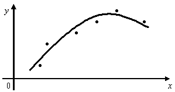

| |
Approximation Functions using The Method of Least Squares>>
On the first day of the 19th century a new asteroid, CERES, had been discovered in the sky, but a few weeks later the celestial body was lost to sight. C.F. Gauss (1777-1855) realized
that he had the necessary computational ability and "the method
of least squares" (by him discovered), and he took up the challenge
to calculate, from the few recorded observations of the asteroid,
the orbit in which it moved. The Method of Least Squares
is used to approximate data. As functions of approximation, depending
on the graphical character of the points of function f (See
Figure), are usually used the following ones: 
Where a, b, c, m are parameters. When the type of function of approximation is established, the problem is reduced to finding the values of these parameters.
|
||||||||||||
| |
|||||||||||||